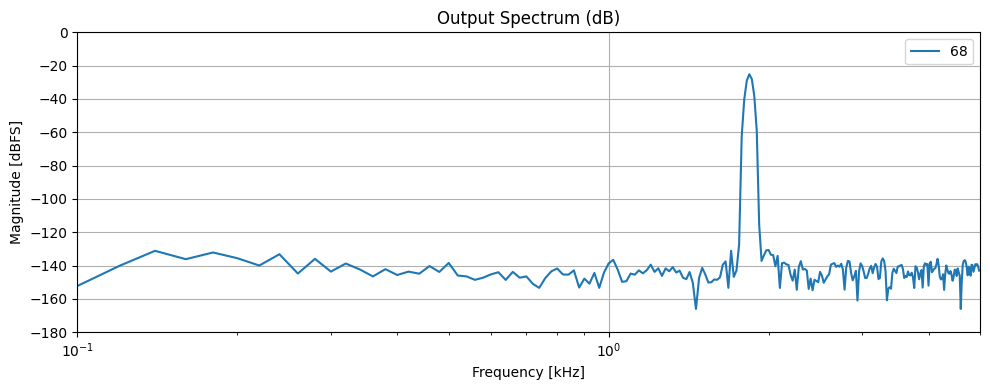
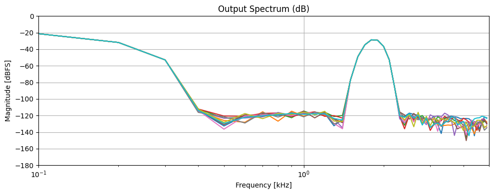
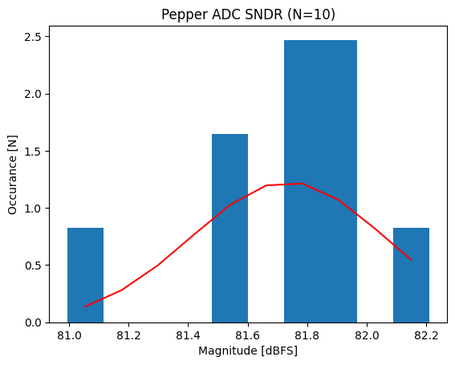

Python Digital Modelling#
from pepper_adc import PepperController
import matplotlib.pyplot as plt
import numpy as np
# TODO evaluate Jitter requirement
# TODO evaluate Reference noise requirement
# Generate test sine wave
freq = 1.8411235123e3 # 800 Hz test frequency
sampling_rate = 1e4
samples = 500
vdd = 1.8
osr_sweep = [18,68]
data = np.empty((len(osr_sweep), samples,))
for selection, osr in enumerate(osr_sweep):
adc = PepperController(
osr=osr,
vdd=vdd,
)
times = np.arange(samples*osr) / (sampling_rate*osr)
analog_input = (
np.sin( 2 * np.pi * times * freq ) * 0.4*vdd + vdd/15
).reshape((samples,osr))
for index in range(samples):
data[selection, index] = adc.convert(analog_input[index,:])
---------------------------------------------------------------------------
KeyboardInterrupt Traceback (most recent call last)
Cell In[2], line 13
9 analog_input = (
10 np.sin( 2 * np.pi * times * freq ) * 0.4*vdd + vdd/15
11 ).reshape((samples,osr))
12 for index in range(samples):
---> 13 data[selection, index] = adc.convert(analog_input[index,:])
File ~/git/Leene-Docs/mint-neuro/pepper_t4/units/adc/dms/py_src/pepper_adc.py:75, in PepperController.convert(self, signal)
73 self.cic.zero_data()
74 for index in range(self.osr):
---> 75 result = self.conversion(signal[index])
76 acc_result = self.cic.update(result)
77 if index == self.osr // 2:
File ~/git/Leene-Docs/mint-neuro/pepper_t4/units/adc/dms/py_src/pepper_adc.py:940, in PepperDataConverter_V2.mes1_conversion(self, vin)
936 def mes1_conversion(self, vin: float):
937 self.mes1_sample(
938 vin=(vin if self._chopper_state < 4 else -vin),
939 )
--> 940 self._adc_convertion()
941 dout = self.dout_mes1
942 return dout
File ~/git/Leene-Docs/mint-neuro/pepper_t4/units/adc/dms/py_src/pepper_adc.py:613, in PepperDataConverter_V1._adc_convertion(self)
612 def _adc_convertion(self):
--> 613 quantization_error = self.sar_process()
614 self.update_loopfilter()
615 self.inc_pointer()
File ~/git/Leene-Docs/mint-neuro/pepper_t4/units/adc/dms/py_src/pepper_adc.py:926, in PepperDataConverter_V2.sar_process(self)
924 for cycle in range(self._lsb_bits):
925 self._lsb_sd1_dout[cycle] = 0 if self.comparator_output else 1
--> 926 return self.quantization_residue
File ~/git/Leene-Docs/mint-neuro/pepper_t4/units/adc/dms/py_src/pepper_adc.py:220, in PepperDataConverter_V1.quantization_residue(self)
218 @property
219 def quantization_residue(self) -> float:
--> 220 return self._loopfilter_offset - self.dac_output
File ~/git/Leene-Docs/mint-neuro/pepper_t4/units/adc/dms/py_src/pepper_adc.py:879, in PepperDataConverter_V2.dac_output(self)
874 @property
875 def dac_output(self) -> float:
876 """Returns DAC output voltage given a digital code in terms of N bits."""
877 bits = np.concatenate(
878 [
--> 879 self._msb_encoded,
880 self._lsb_sd1_dout,
881 self._qnf_aout,
882 ]
883 )
884 return (
885 np.dot(bits, self.dac_caps) / np.sum(self.dac_caps)
886 ) * self._vdd + self._v_sampled
File ~/git/Leene-Docs/mint-neuro/pepper_t4/units/adc/dms/py_src/pepper_adc.py:498, in PepperDataConverter_V1._msb_encoded(self)
495 if self._msb_dout[index] < 0.25:
496 code[selection] = 0
--> 498 assert sum(code == 1) == self.msb_value
499 # print(code)
500 return np.roll(
501 code,
502 self._dwa_pointer,
503 )
KeyboardInterrupt:
from scipy.fft import fft, fftfreq
from scipy.signal import windows
window = windows.blackmanharris(data.shape[1])
windowed_output = data * np.repeat(window[np.newaxis,:],data.shape[0], axis=0)
# Compute FFT
N = data.shape[1]
fft_data = np.abs(fft(windowed_output.T, axis=0))
frequencies = fftfreq(N, 1 / sampling_rate)
# Compute magnitude spectrum (single-sided)
magnitude = 2.0 / N * np.abs(fft_data[:N // 2])
frequencies = frequencies[:N // 2]
plt.figure(figsize=(10, 4))
plt.semilogx(frequencies / 1e3, 20 * np.log10(magnitude))
plt.title("Output Spectrum (dB)")
plt.xlabel("Frequency [kHz]")
plt.ylabel("Magnitude [dBFS]")
plt.grid(True)
plt.tight_layout()
plt.legend(osr_sweep)
plt.xlim([0.1, sampling_rate * 0.5e-3])
plt.ylim([ -180, 0])
plt.show()
# Find signal bin and SNDR
sndr_db = np.zeros(magnitude.shape[1:])
for index,osr in enumerate(osr_sweep):
signal_bin = np.argmax(magnitude[10:,index], axis=0) + 10
signal_power = np.sum(magnitude[signal_bin-5:signal_bin+5,index] ** 2)
noise_power = np.sum(magnitude[5:,index] ** 2) - signal_power
sndr_db[index] = 10 * np.log10(signal_power / noise_power)
print(f"{2 ** (osr + 2)}: SNDR ≈ {sndr_db[index]:.2f} dB, ENOB = {(sndr_db[index]-1.72)/6.02:.2f}")

1180591620717411303424: SNDR ≈ 94.97 dB, ENOB = 15.49
from pepper_adc import PepperController
import matplotlib.pyplot as plt
import numpy as np
sampling_rate = 1e3
channels = 8
power = []
osr_selection = np.array([4,8,16,32,64])
for selection, osr in enumerate(osr_selection):
adc = PepperController(osr=osr)
power.append(
(
adc.analog_energy,
adc.switching_energy,
adc.digital_energy,
adc.total_energy,
)
)
power_figure = np.array(power) * sampling_rate * channels
plt.plot(osr_selection, power_figure*1e6)
plt.legend(["analog","cdac","digital", "total"])
plt.title(f"Power Estimator for {channels} Channels at {sampling_rate * 1e-3} kS/s")
plt.xlabel("Oversampling Ratio [N]")
plt.ylabel("Power [uW]" )
power_total = float(PepperController(osr=18).total_energy * sampling_rate * channels)
analog_energy = float(PepperController(osr=18).analog_energy * sampling_rate * channels)
figure_of_merit = power_total / ( sampling_rate * channels * (2 ** 14))
print(f"Expected Power for 14 bit conversion on 8 Channels: {power_total*1e6:.3f} uW")
print(f"Analog Power for 14 bit conversion on 8 Channels: {analog_energy*1e6:.3f} uW")
print(f"The FOM is : {figure_of_merit * 1e15:.2f} fJ/conv")
Expected Power for 14 bit conversion on 8 Channels: 26.986 uW
Analog Power for 14 bit conversion on 8 Channels: 4.654 uW
The FOM is : 205.89 fJ/conv
from pepper_adc import PepperController
import matplotlib.pyplot as plt
import numpy as np
mc_count = 5
osr = 18
freq = 1.8411235123e3 # 800 Hz test frequency
sampling_rate = 1e4
samples=200
vdd = 1.8
mc_data = np.empty((mc_count, samples,))
for selection in range(mc_count):
adc = PepperController(
osr=osr
)
times = np.arange(samples*osr) / (sampling_rate*osr)
analog_input = (
np.sin( 2 * np.pi * times * freq ) * 0.4*vdd + vdd/15
).reshape((samples,osr))
for index in range(samples):
mc_data[selection, index] = adc.convert(analog_input[index,:])
from scipy.stats import describe, norm
from scipy.fft import fft, fftfreq
from scipy.signal import windows
from pprint import pformat
window = windows.blackmanharris(mc_data.shape[1])
windowed_output = mc_data * np.repeat(window[np.newaxis,:],mc_data.shape[0], axis=0)
# Compute FFT
N = mc_data.shape[1]
mc_fft_data = np.abs(fft(windowed_output.T, axis=0))
frequencies = fftfreq(N, 1 / sampling_rate)
# Compute magnitude spectrum (single-sided)
mc_magnitude = 2.0 / N * np.abs(mc_fft_data[:N // 2])
frequencies = frequencies[:N // 2]
plt.figure(figsize=(10, 4))
plt.semilogx(frequencies / 1e3, 20 * np.log10(mc_magnitude))
plt.title("Output Spectrum (dB)")
plt.xlabel("Frequency [kHz]")
plt.ylabel("Magnitude [dBFS]")
plt.grid(True)
plt.tight_layout()
plt.xlim([0.1, sampling_rate * 0.5e-3])
plt.ylim([ -180, 0])
plt.show()
# Find signal bin and SNDR
mc_sndr_db = np.zeros(mc_magnitude.shape[1:])
mc_enob = np.zeros(mc_magnitude.shape[1:])
for index in range(mc_magnitude.shape[1]):
signal_bin = np.argmax(mc_magnitude[10:,index], axis=0) + 10
signal_power = np.sum(mc_magnitude[signal_bin-5:signal_bin+5,index] ** 2)
noise_power = np.sum(mc_magnitude[5:,index] ** 2) - signal_power
mc_sndr_db[index] = 10 * np.log10(signal_power / noise_power)
mc_enob[index] = (mc_sndr_db[index]-1.72)/6.02
# print(f"{2 ** (osr + 2)}: SNDR ≈ {mc_sndr_db[index]:.2f} dB, ENOB = {(mc_sndr_db[index]-1.72)/6.02:.2f}")
dist_sndr = describe(mc_sndr_db)
histogram, bins = np.histogram(mc_sndr_db, density=True)
bin_centers = 0.5*(bins[1:] + bins[:-1])
pdf = norm.pdf(bin_centers, loc=dist_sndr.mean,scale=dist_sndr.variance ** 0.5)
plt.hist(mc_sndr_db, density=True)
plt.plot(bin_centers, pdf, color='r')
plt.title(f"Pepper ADC SNDR (N={mc_count})")
plt.xlabel("Magnitude [dBFS]")
plt.ylabel("Occurance [N]")
dist_enob = describe(mc_enob)
print(pformat(dist_enob._asdict()))
print(f"3-sigma ENOB: {dist_enob.mean - 3 * (dist_enob.variance ** 0.5)}, {dist_enob.mean + 3 * (dist_enob.variance ** 0.5)}")


{'kurtosis': np.float64(0.9524303312894795),
'mean': np.float64(13.291489565421575),
'minmax': (np.float64(13.168488732089484), np.float64(13.370226139931422)),
'nobs': 10,
'skewness': np.float64(-1.0164418500460917),
'variance': np.float64(0.002914376003960338)}
3-sigma ENOB: 13.129534682705298, 13.453444448137851
import sympy as sp
# Define symbols
N, f_in, t_j = sp.symbols('N f_in t_j', positive=True)
SNR_ideal = 6.02 * N + 1.76
# SNR_jitter formula
SNR_jitter = -20 * sp.log(2 * sp.pi * f_in * t_j, 10)
# Solve for t_j in terms of N and f_in
t_j_expr = sp.solve(sp.Eq(SNR_jitter, SNR_ideal), t_j)[0]
# Substitute numeric values
t_j_value = t_j_expr.subs({N: 16, f_in: 500}) # 500 Hz input (Nyquist/2)
t_j_value_numerical = sp.N(t_j_value)
print(f"Aperture jitter requirement (seconds): {float(t_j_value_numerical * 1e9):.3f} ns RMS")
Aperture jitter requirement (seconds): 3.971 ns RMS
"""
ADC Noise and Source Impedance Model (Single Ended)
------------------------------------
Symbolic and numeric derivation using Sympy for:
1. Reference RMS noise requirement (based on quantization noise).
2. Maximum source impedance for 0.5 LSB settling accuracy.
"""
import sympy as sp
# ==========================================================
# Define symbolic parameters
# ==========================================================
N, Vfs, C, t_acq, osr, M = sp.symbols('N Vfs C t_acq osr M', positive=True)
ln2 = sp.log(2)
# ==========================================================
# 1. Reference RMS noise requirement
# ==========================================================
# LSB = Vfs / 2^N
LSB = Vfs / (2 ** N)
# Quantization RMS (standard deviation of quantization noise)
quant_rms = LSB / sp.sqrt(12)
# Allowable reference RMS noise (must be ≤ quantization noise)
Vref_rms_max = quant_rms
# ==========================================================
# 2. Source impedance requirement for settling
# ==========================================================
# For exponential RC settling: exp(-t/(R*C)) ≤ 1/(2^(N+1))
# Solve for R: R ≤ t / (C * (N+1) * ln(2))
t_eff = t_acq / osr / M
R_max = t_eff / (C * (N + 1) * ln2)
R_five_tau = t_eff / (C * 5)
R_in = t_eff/C
# ==========================================================
# Substitute example values
# ==========================================================
# Example: 16-bit ADC, 1.8 V full-scale, 5 pF input cap, 1 ms acquisition time
params = {
N: 16, # adc resolution (bits)
Vfs: 1.8, # supply voltage (volts)
C: 26e-12, # sampling capacitance (farads )
t_acq: 0.5/1e3, # aquisition time (seconds)
osr: 18, # over sampling ratio
M: 8, # channel count
}
# Evaluate numeric results
t_eff_val = sp.N(t_eff.subs(params))
LSB_val = sp.N(LSB.subs(params))
quant_rms_val = sp.N(quant_rms.subs(params))
Vref_rms_val = sp.N(Vref_rms_max.subs(params))
R_max_val = sp.N(R_max.subs(params))
R_five_tau_val = sp.N(R_five_tau.subs(params))
R_in_val = sp.N(R_in.subs(params))
# ==========================================================
# Print results
# ==========================================================
print("=== ADC Noise and Source Impedance Model ===\n")
print(f"Resolution (N): {params[N]} bits")
print(f"Full-scale voltage (Vfs): {params[Vfs]} V")
print(f"Input capacitance (C): {params[C]*1e12:.2f} pF")
print(f"Acquisition time (t_acq): {t_eff_val*1e6:.2f} µs")
print("------------------------------------------------")
print(f"LSB = {LSB_val:.6e} V ({float(LSB_val*1e6):.3f} µV)")
print(f"Quantization RMS noise = {quant_rms_val:.6e} V ({float(quant_rms_val*1e6):.3f} µV)")
print(f"Max Reference RMS Noise = {Vref_rms_val:.6e} V ({float(Vref_rms_val*1e6):.3f} µV)")
print("------------------------------------------------")
print(f"Max Source Impedance (R_max) = {R_max_val:.3e} Ω ({float(R_max_val/1e3):.2f} kΩ)")
print(f"Five Tau Source Impedance (R_max) = {R_five_tau_val:.3e} Ω ({float(R_five_tau_val/1e3):.2f} kΩ)")
print("\nInterpretation:")
print(f" - Keep Vref RMS noise below the quantization RMS (~{float(quant_rms_val*1e6):.3f} µV for {params[N]}-bit, {params[Vfs]} V FS).")
print(f" - Source impedance up to {float(R_max_val/1e3):.2f} kΩ theoretically satisfies 0.5 LSB settling at 1 ms acquisition.")
print(f" - Source impedance up to {float(R_five_tau_val/1e3):.2f} kΩ satisfies 5 tau settling with {100 * sp.exp(-5):.3f}% gain error.")
print("------------------------------------------------")
print(f"Load impedance is estimated at {float(R_in_val/1e3):.2f} kΩ.")
=== ADC Noise and Source Impedance Model ===
Resolution (N): 16 bits
Full-scale voltage (Vfs): 1.8 V
Input capacitance (C): 26.00 pF
Acquisition time (t_acq): 3.47 µs
------------------------------------------------
LSB = 2.746582e-5 V (27.466 µV)
Quantization RMS noise = 7.928699e-6 V (7.929 µV)
Max Reference RMS Noise = 7.928699e-6 V (7.929 µV)
------------------------------------------------
Max Source Impedance (R_max) = 1.133e+4 Ω (11.33 kΩ)
Five Tau Source Impedance (R_max) = 2.671e+4 Ω (26.71 kΩ)
Interpretation:
- Keep Vref RMS noise below the quantization RMS (~7.929 µV for 16-bit, 1.8 V FS).
- Source impedance up to 11.33 kΩ theoretically satisfies 0.5 LSB settling at 1 ms acquisition.
- Source impedance up to 26.71 kΩ satisfies 5 tau settling with 0.674% gain error.
------------------------------------------------
Load impedance is estimated at 133.55 kΩ.
from pepper_adc import AdcBuffer
buffer_14b = AdcBuffer(c_load=26e-12)
buffer_16b = AdcBuffer(c_load=52e-12)
print(f"Buffer Power for the 26pF Sampling config is:{buffer_14b.power}")
print(f"Buffer Power for the 52pF Sampling config is:{buffer_16b.power}")
Buffer Power for the 26pF Sampling config is:10.109 uW
Buffer Power for the 52pF Sampling config is:20.218 uW